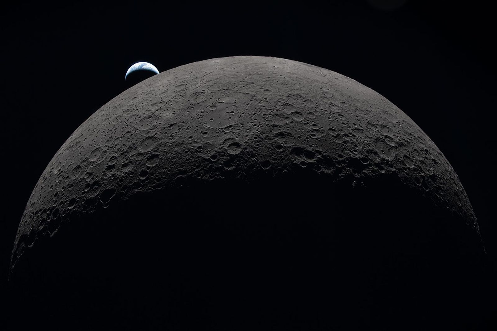

Space Wars 1.5
The parent scroll was written on the morning of April 1, 2026 — the day Artemis II left for the Moon. It ended mid-flight, with a question. This is what happened when they came back.
The Return
The parent scroll ends with four humans flying toward the Moon and a sentence that was true when it was written: “Whatever they find — or whatever they’re allowed to tell us they found — the old narrative is already crumbling.”
They came back on April 10. The narrative kept crumbling — but not the way anyone expected. This addendum was written on July 12, 2026 — Day 102 after launch — bringing the investigation through its first spring.
The Flight
The Two Blackouts
Hold on to those two blackouts. Both were real, both were explained — and both will be repurposed by the noise machine before the capsule is even dry.
Hello, World
The UAP discourse, busy with 50-year-old film frames, barely noticed.

Integrity and Carroll
The parent scroll asked what they would find on the far side. Here is the first thing the record shows they did with it: they named it for the people they love. Whatever else is true about the two histories of space, that happened, on an open channel, and no one edited it out.
The Shield Held
An honest ledger cuts both ways. The parent scroll raised the radiation and heat-shield questions because the record raised them. The record has now answered one of them, cleanly. It stays answered.
NASA’s detailed post-flight analysis of Orion’s heat shield confirmed the modified reentry profile quantitatively: inspection logged 9 spots of char loss on Artemis II compared to 103 on Artemis I, along with a tenfold reduction in cracking, validating compression-pad performance against pre-flight arc-jet models (NASA; Phys.org). The crew’s provisional crater names (Integrity and Carroll) remain under IAU review. Artemis III remains redesignated as a crewed low-Earth-orbit rendezvous and docking demonstration with commercial landers (SpaceX and Blue Origin) targeting mid-to-late 2027, leaving the first crewed lunar landing to Artemis IV (~2028).
The Shift
Listen to what the crew said when they came home. Pilot Victor Glover: “The gratitude of seeing what we saw… it’s too big to just be in one body.” Mission specialist Christina Koch: “There’s one new thing I know, and that is planet Earth: you are a crew.” Canadian mission specialist Jeremy Hansen: “Looking back at Earth, you really felt like you weren’t in a capsule.” Wiseman asked for the chaplain on the recovery ship and broke down in tears.
C-SPAN’s own title for the press conference clip: “Artemis II Astronauts Speak About Shift in Consciousness After Seeing Earth From the Far Side of the Moon.” The parent scroll’s Act III documented what happened to Edgar Mitchell on the way home from the Moon in 1971 — the experience that made him spend the rest of his life on consciousness and disclosure. In 2026 it happened again, to four people, on camera, in the official record, under a C-SPAN chyron. Nobody had to leak it.
Note the shape of the moment. A genuinely luminous human event — and the reflex, in both directions, was to reach for the fake. The parent scroll documented fifty years of institutional lying about space; this is what fifty years of it does to a public: it can no longer receive even the true thing straight. That damage has authors. Act II is about them.
The Chaff
The parent scroll’s Act V told the story of the crack in the wall: December 2017, the New York Times, three Navy videos the Pentagon confirmed as authentic. GIMBAL. GOFAST. FLIR1. The disclosure era’s founding artifacts.
What the seventeen months from February 2025 to July 2026 did to those artifacts is the strangest chapter in this file. It is widely misremembered — including, at first, by the researchers who assembled this addendum. So here is the record, at tier, exactly.
The Confession
Read that again. The myth wasn’t merely tolerated. It was issued. Government photographs, government briefings, government oaths — manufacturing belief in crashed saucers as camouflage for whatever actually needed hiding. The mythology of the saucer is now, officially, in part, a government work product.
The debunkers celebrated: see, it was all seeded nonsense. But sit with what was actually confirmed. The confirmed fact is not “there is nothing.” The confirmed fact is: the institution that holds the records lies about this subject, on purpose, as policy, across decades. That sentence now sits at the Documented tier. Everything else follows from it.
The Downgrade
The Absence

The parent scroll’s Act IV held Carol Rosin’s testimony at the credible tier: von Braun’s warning that belief in threats from space would one day be manufactured. The Yankee Blue confession is the first documented proof that the manufacturing plant exists. That cuts both ways, and the scroll holds both edges: it is the strongest card the skeptics have ever drawn — and it is precisely what von Braun described being built.
Eight days after this scroll was written, AARO published its FY2025 Consolidated Annual Report on July 20, 2026 — logging 319 new UAP reports (June 2024–May 2025) and 370 resolved cases (114 current, 256 backlog; 238 attributed to satellite flaring), with no verified evidence of breakthrough foreign or extraterrestrial technology (AARO; Senate.gov). However, Historical Record Report Volume 2 — the volume the Pentagon promised to document “Yankee Blue” and inauthentic materials — remains unreleased as of November 2026. GIMBAL and FLIR1 likewise remain officially unresolved and absent from all PURSUE releases through Release 08.
What Didn’t Linger
The parent scroll ended on a question: what happens when the rest of us find out?
The answer began arriving five weeks after splashdown, with a URL. Not alien.gov — the parent scroll tracked those domains, registered in March, sitting dormant on launch day. When aliens.gov finally went live in May, it was an immigration-enforcement parody page — the word “alien” spent on the border. The actual files landed at war.gov/ufo. Sit with the address for a moment: the records about whether we are alone in the universe are published by the Department of War (the Trump administration’s rebranded Department of Defense).
The Trickle, Dated
The monthly drip held its cadence through autumn, reaching eight releases on war.gov/ufo: Release 05 (August 7, 2026: 41 files, including FBI triangular-craft reports and AC-130J Gulf of Oman infrared clips), Release 06 (September 18: ~71–75 records, including 1952 Project Blue Book director Edward Ruppelt audio and DIA AAWSAP/BAASS contracts), Release 07 (October 23: 28 documents, zero videos, including FBI matte-black-triangle memos), and Release 08 (November 20: 43 files, including a 1952 OSI briefing, Lockheed engineer Kelly Johnson’s 1953 notes, and a 2009 BAASS/DIA report detailing plans for an underground vault to store “exotic material”) (war.gov/ufo; CBS News; EarthSky). GIMBAL and FLIR1 remained absent through all eight releases. Separately, in July 2026 ODNI issued preliminary guidance authorizing defense and intelligence personnel to report historical UAP information to AARO and the PURSUE Task Force despite legacy non-disclosure agreements (DLA Piper).
Day one set the pattern: saturation coverage of the Aldrin transcript by morning, “NOTHING BURGER” by afternoon, former AARO director Sean Kirkpatrick predicting the release would “only serve to fuel more speculation, conspiracy and arm-chair pseudoscience,” and a sitting congresswoman accusing her own administration of using the files as a distraction. Then the cycle moved on.
It moved on too fast. Because inside the churn were items that deserved the thing a news cycle cannot give: a linger. This act is the linger.
The Astronauts, In Their Own Voices
The Sentence That Is an Org Chart
Read the two halves of the machine side by side. The civilian space agency tells the National Archives it owns none of its own anomaly record — while a war-department website publishes its astronauts’ debriefs. The parent scroll spent an act arguing that the public program and the classified program are two tracks of one system. That sentence from NASA’s communications office is the two-track hypothesis drawn in public, in the agency’s own hand.
The Caption Nobody Chased
Stay here a moment — this is the linger the cycle skipped. In the year 2026, a United States government release page volunteered a fresh analysis of a 1972 photograph and concluded that something physical may have hung in the lunar sky over the last crewed landing. The tabloids inflated it. The debunkers answered the image set generically — film damage, lens flare, visor reflections. The mainstream never engaged the specific analytic sentence at all. As of July 2026, it sat there on a .gov page, unchased. Skeptic astrophysicist David Whitehouse, for the balance the tiers demand: “No hint, no evidence whatsoever of anything artificial and alien.”
The Director’s Signature
Harvard astrophysicist Avi Loeb — appointed in June 2026 to chair the government’s new UAP Science Advisory Council — wrote of that report: “either we are dealing with a serious breach of national security or with the biggest discovery ever made in human history.”
Mellon’s line is the key to the whole rollout. Ryan Graves, the same week: “Ambiguous imagery without provenance, metadata, and operational context is hard for pilots, researchers, or the public to evaluate responsibly.” As of July 2026, forty-six videos requested by the congressional task force chair remained classified. Officials acknowledge millions of unprocessed documents. The machine publishes artifacts and withholds adjudication — volume without verdicts. And the one time it volunteered a verdict — the Apollo 17 caption — nobody followed up. That asymmetry is the tell worth carrying out of this act.
Meanwhile, Under Oath and On the Steps
Ten days after this scroll was written, on July 22, 2026, the House of Representatives passed the UAP Disclosure Act for the first time in either chamber via Rep. Eric Burlison’s bipartisan amendment to the FY2027 NDAA (H.R. 8800) — restoring the independent review board, NARA collection, and eminent-domain provisions. The Senate Armed Services bill (S. 4784) omitted the measure (a Schumer–Rounds amendment, S.Amdt. 6344, stalled when Senate NDAA cloture failed July 14), leaving the UAPDA’s fate pending lame-duck House–Senate conference negotiations as of late November 2026 (House.gov; Disclosure Diaries).
The Rehearsal
The parent scroll reached for For All Mankind as a frame: two histories of space running side by side, the show’s question — what if we kept going? — shadowing the scroll’s question — what if we did keep going, and weren’t told?
During the 102 days this addendum covers, the mirror did something it had never done in six years on the air. It found life. And it told everyone.
The Finale
One antenna, two payloads. Note the precision of what the fiction stages — and what it declines to stage. The discovery does not end the war; peace is chosen separately, by politics, off screen. But the storytellers braid the two revelations through the same blackout and release them through the same dish, in the same hour: the war is over, and we are not alone, arriving together as good news into a world that had just chosen to stop shooting. Millions of viewers practiced receiving that transmission — distributed across a streaming platform with an estimated 60 million subscribers. That is what fiction is for — and that is all this act will claim it is, at this tier.
The Convergence Is the Design
Production on For All Mankind’s sixth and final season officially wrapped filming on August 12, 2026, entering post-production for a projected 2027 debut on Apple TV (Apple TV PR).
In the fiction, the dose arrives all at once — and the patient survives it. Is healed by it, even: the war stops and then the world learns it isn’t alone, and the two mercies hold each other up. In the lived timeline, the dose arrives in monthly tranches, unadjudicated captions, dead bills, and one director’s signature under “40% unresolved.”
Two dosing schedules. Arguably the same medicine. The show has one season left. It ends at 2020, with a signal. Whatever the lived timeline holds by the time it airs — the rehearsal will be over.
The Dose
Day 102
Here is where the investigation stood on July 12, 2026 — Day 102:
- The crew came home. Two farside craters carried the names of a ship called Integrity and a woman who was loved. The heat shield held. The overview effect entered the official record under a C-SPAN chyron.
- The mythology had an author. The Pentagon’s own review confirmed it seeded UFO lore for decades — and the volume containing that confession was itself overdue.
- The files dropped monthly from a war-department URL, artifacts without adjudication — while the three most famous videos in the world remained untouched by the machine built to release things.
- A sitting AARO director signed “40% of the reported phenomena lack a reasonable explanation.”
- NASA told the National Archives it owns none of its own anomaly record. The sentence is an org chart.
- The compelled path had died a third year; the managed path grew new boards and councils.
- The fiction had one season left. It ends at 2020, holding a signal, one step from the present.
We’re finding out. The question now is who sets the dose.
Are we alone was never really the question — too many people with too many clearances have answered it. What happens when we find out is no longer the question — at the time of this writing (July 2026), we were inside the finding-out, at drip rate — 102 days into it. The question is the drip rate itself. Watch the valve.
Written on July 12, 2026: this addendum will be out of date by autumn. The fifth tranche is already announced; the annual report is already late; the final season is already filming. That is not a flaw in the scroll. That is what a process looks like from inside — and the parent scroll’s last line still stands, one word older: the old narrative isn’t crumbling anymore. It’s being dismantled, on a schedule, by the people who built it.
Space Wars continues. Same investigation. Day 102. Still open.
Autumn arrived on schedule. Eight days after those words were written, AARO published its overdue FY2025 annual report (July 20, 2026); ten days after, the House passed the UAP Disclosure Act for the first time in H.R. 8800 (July 22), though the Senate’s S. 4784 omitted it; For All Mankind’s sixth and final season wrapped filming August 12 for a 2027 release; and PURSUE held its monthly drip through Release 08 on November 20 (including a 2009 BAASS/DIA underground-vault report), while Historical Record Report Volume 2 and the GIMBAL/FLIR1 videos remained unreleased. The valve kept turning.
Disclosure is not a single event. It’s a process. This scroll records what the process looked like from inside — its first 102 days (April–July 2026).